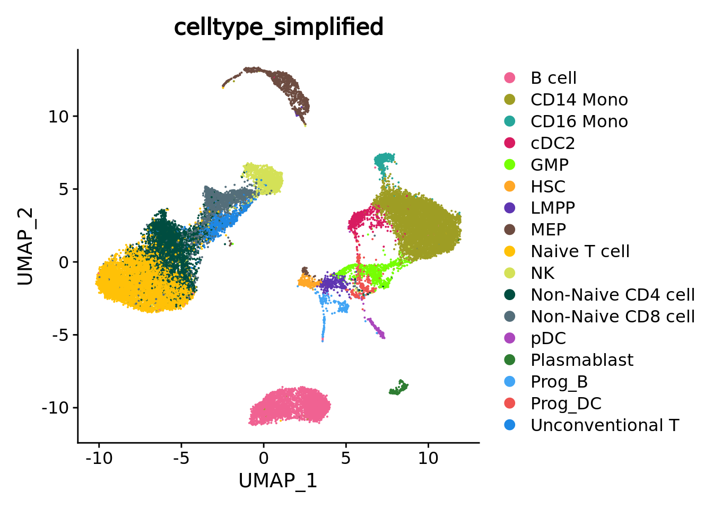

3.1 SuperCell (R)
In this section, we construct metacells using the R package SuperCell.
3.1.1 Method
The SuperCell method first reduces the gene expression space using principal component analysis (PCA) and computes euclidean distances based on the reduced space. Using the euclidean distances, a single-cell kNN graph is built and metacells are identified by applying the walktrap community detection algorithm. The number of metacells obtained can be chosen by the user by defining the graining level parameter.
The code provided in this section is adapted from the author’s github documentation. For more information on the method, please refer to our review10 and the original paper.11
3.1.2 Data loading
We will run SuperCell on a single-cell dataset composed of 2638 peripheral blood mononuclear cells (PBMCs) available in the scanpy package. Please follow the section 1.2 to retrieve these data from the scanpy package, preprocess and save the data in the following file: “data/3k_pbmc/singlecell_seurat_filtered.rds”.
print(proj_name)
#> [1] "3k_pbmc"
celltype_colors <- c(
"CD14+ Monocytes" = "#E69F00", # orange
"B cells" = "#56B4E9", # sky blue
"CD4 T cells" = "#009E73", # bluish green
"NK cells" = "#F0E442", # yellow
"CD8 T cells" = "#0072B2", # blue
"FCGR3A+ Monocytes" = "#D55E00", # vermillion
"Dendritic cells" = "#CC79A7", # reddish purple
"Megakaryocytes" = "#000000" # black
)
sc_data = readRDS(paste0("data/", proj_name, "/singlecell_seurat_filtered.rds"))3.1.3 Filtering steps
In this tutorial, the data have been pre-filtered and SuperCell does not require further filtering steps.
3.1.4 Building metacells
Metacells construction using SuperCell requires one main input, i.e. a matrix of log-normalized gene expression data which will be used to compute PCA to subsequently build a knn graph for metacells identification.
Important optional inputs are:
(i) the graining level (gamma parameter),
(ii) the number of neighbors to consider for the knn graph (k.knn parameter),
(iii) the number of principal components to use to generate the knn graph (n.pc parameter),
and (iv) the number of most variable genes to consider for PCA (n.var.genes parameter).
Data pre-processing
SuperCell builds its knn graph based on Euclidean distances defined in the PCA space.
PCA computation is performed on the log-normalized gene expression data in the SCimplify SuperCell function.
In the following code chunk, we use Seurat to normalize and visualize the data:
library(Seurat)
#> The legacy packages maptools, rgdal, and rgeos, underpinning this package
#> will retire shortly. Please refer to R-spatial evolution reports on
#> https://r-spatial.org/r/2023/05/15/evolution4.html for details.
#> This package is now running under evolution status 0
#> Attaching SeuratObject
sc_data <- NormalizeData(sc_data, normalization.method = "LogNormalize")
sc_data <- FindVariableFeatures(sc_data, nfeatures = 2000)
sc_data <- ScaleData(sc_data)
#> Centering and scaling data matrix
sc_data <- RunPCA(sc_data, npcs = 50, verbose = F)
sc_data <- RunUMAP(sc_data, reduction = "pca", dims = c(1:30), n.neighbors = 15, verbose = F)
#> Warning: The default method for RunUMAP has changed from calling Python UMAP via reticulate to the R-native UWOT using the cosine metric
#> To use Python UMAP via reticulate, set umap.method to 'umap-learn' and metric to 'correlation'
#> This message will be shown once per session
UMAPPlot(sc_data, group.by = annotation_label, cols = celltype_colors)
Setting up SuperCell parameters
In this tutorial, we will run SuperCell using the 30 first principal components resulting from the PCA. We chose a graining level of 25 and a number of neighbors of 15 for the knn step.
gamma = 10 # the requested graining level.
k_knn = 15 # the number of neighbors considered to build the knn network.
nb_var_genes = 2000 # number of the top variable genes to use for dimensionality reduction
nb_pc = 50 # the number of principal components to use. Metacells identification
The metacells are identified using the SCimplify function from the SuperCell package.
MC <- SuperCell::SCimplify(Seurat::GetAssayData(sc_data, slot = "data"), # single-cell log-normalized gene expression data
k.knn = k_knn,
gamma = gamma,
# n.var.genes = nb_var_genes,
n.pc = nb_pc,
genes.use = Seurat::VariableFeatures(sc_data)
)SCimplify returns a list containing the following main elements:
(i) the single-cell assignments to metacells (membership),
(ii) the metacell sizes (supercell_size),
(iii) the single-cell graph (graph.singlecell),
(iv) the metacell graph (graph.supercells),
(v) the genes used for metacell identification (genes.use).
Retrieve aggregated metacell data
The supercell_GE() function can be used to generate a metacell counts matrix (aggregation of gene expression across all cells belonging to each metacell).
Two modes can be used for single-cell aggregation, i.e. averaging of log-normalized gene expression or summing up raw counts (using the mode parameter).
Note that we provide raw counts for the aggregation in this tutorial to match the aggregation steps using PC2 and SEAcells (see 3.2 and 3.3).
Data normalization will thus be needed for downstream analyses on the metacell counts matrix.
MC.GE <- supercell_GE(Seurat::GetAssayData(sc_data, slot = "counts"),
MC$membership,
mode = "sum"
)
dim(MC.GE)
#> [1] 32738 2643.1.5 Annotate metacells (using available annotations)
We can assign each metacell to a particular annotation using the supercell_assign() function.
By default, this function assigns each metacell to a cluster with the largest Jaccard coefficient to avoid biases towards very rare or very abundant clusters.
Alternatively, assignment can be performed using relative (method = "relative", may cause biases towards very small populations) or absolute (method = "absolute", may cause biases towards large populations) abundance.
print(annotation_label)
#> 3k_pbmc
#> "louvain"
MC$annotation <- supercell_assign(clusters = sc_data@meta.data[, annotation_label], # single-cell annotation
supercell_membership = MC$membership, # single-cell assignment to metacells
method = "absolute"
)
head(MC$annotation)
#> 1 2 3 4
#> "B cells" "CD14+ Monocytes" "CD4 T cells" "NK cells"
#> 5 6
#> "CD4 T cells" "CD4 T cells"The SuperCell package provides the supercell_plot function to visualize the metacell network (igraph object where number of nodes corresponds to number of metacells),
which is stored in the MC list in graph.supercells.
The metacells can be colored with respect to a vector of annotation.
supercell_plot(
MC$graph.supercells,
group = MC$annotation,
seed = 1,
alpha = -pi/2,
main = "Metacells colored by cell line assignment"
)
3.1.6 Save output
For future downstream analyses in R (section 5.1), metacell counts can be saved in a Seurat object. Here we also save in the Seurat object the PCA components and genes used in SCimplify for future QC analysis (See 4).
colnames(MC.GE) <- as.character(1:ncol(MC.GE))
MC.seurat <- CreateSeuratObject(counts = MC.GE,
meta.data = data.frame(size = as.vector(table(MC$membership)))
)
MC.seurat[[annotation_label]] <- MC$annotation
# save single-cell membership to metacells in the MC.seurat object
MC.seurat@misc$cell_membership <- data.frame(row.names = names(MC$membership), membership = MC$membership)
MC.seurat@misc$var_features <- MC$genes.use
# Save the PCA components and genes used in SCimplify
PCA.res <- irlba::irlba(scale(Matrix::t(sc_data@assays$RNA@data[MC$genes.use, ])), nv = nb_pc)
pca.x <- PCA.res$u %*% diag(PCA.res$d)
rownames(pca.x) <- colnames(sc_data@assays$RNA@data)
MC.seurat@misc$sc.pca <- CreateDimReducObject(
embeddings = pca.x,
loadings = PCA.res$v,
key = "PC_",
assay = "RNA"
)
print(paste0("Saving metacell object for the ", proj_name, " dataset using ", MC_tool))
#> [1] "Saving metacell object for the 3k_pbmc dataset using SuperCell"
saveRDS(MC.seurat, file = paste0('./data/', proj_name, '/metacell_', MC_tool,'.rds'))We can also use the supercell_2_Seurat() function from the SuperCell package.
This function takes as inputs the metacell count matrix (output of the SuperCell supercell_GE() function) and the output of the SuperCell SCimplify() function
to output a Seurat object containing normalized metacells gene expression data as well as the first (N.comp) principal components of PCA performed internally using user defined set of genes (by default the genes used for metacells constructions).
MC.seurat <- supercell_2_Seurat(
SC.GE = MC.GE,
SC = MC,
fields = c("annotation", "supercell_size"), # elements of MC to save as metacell metadata
var.genes = MC$genes.use,
N.comp = 10
)
saveRDS(MC.seurat, file = paste0('./data/', proj_name, '/metacell_', MC_tool,'.rds'))For future downstream analyses in python (section ??), metacell counts can be saved in an Anndata object:
MC.seurat.ad <- anndata::AnnData(
X = Matrix::t(Seurat::GetAssayData(MC.seurat, slot = "counts")),
obs = MC.seurat@meta.data
)
anndata::write_h5ad(anndata = MC.seurat.ad, filename = paste0('./data/', proj_name, '/metacell_', MC_tool,'.h5ad'))#> used (Mb) gc trigger (Mb) max used (Mb)
#> Ncells 3435525 183.5 5974597 319.1 4945498 264.2
#> Vcells 20463953 156.2 65102028 496.7 65101750 496.7